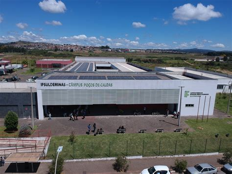

IFSULDEMINAS - Campus Poços de Caldas
Em 2008 o Governo Federal deu um salto na educação do país com a criação dos Institutos Federais. Através da Rede Federal de Educação Profissional e Tecnológica 31 centros federais de educação tecnológica (Cefets), 75 unidades descentralizadas de ensino (Uneds), 39 escolas agrotécnicas, 7 escolas técnicas federais e 8 escolas vinculadas a universidades deixaram de existir para formar os Institutos Federais de Educação, Ciência e Tecnologia.
No Sul de Minas, as Escolas Agrotécnicas Federais de Inconfidentes, Machado e Muzambinho, tradicionalmente reconhecidas pela qualidade na oferta de ensino médio e técnico foram unificadas. Nasce assim o atual Instituto Federal de Educação, Ciência e Tecnologia do Sul de Minas Gerais – IFSULDEMINAS.
Hoje, o IFSULDEMINAS oferece cursos de ensino médio integrado, técnico, cursos superiores de tecnologia, licenciatura, especialização, pós-graduação e cursos de Educação a Distância. Além dos campi de Inconfidentes, Machado e Muzambinho o IFSULDEMINAS tem Unidades Avançadas e Polos de Rede nas cidades da região.
A Reitoria interliga toda a estrutura administrativa e educacional dos campi. Sediada em Pouso Alegre, sua estratégica localização, permite fácil acesso aos campi e unidades do IFSULDEMINAS. A missão do Instituto é promover a excelência na oferta da educação profissional e tecnológica em todos os níveis, formando cidadãos críticos, criativos, competentes e humanistas, articulando ensino, pesquisa e extensão e contribuindo para o desenvolvimento sustentável do Sul de Minas Gerais.
Em todo o Brasil os Institutos Federais apresentam um modelo pedagógico e administrativo inovador. São 38 unidades, com mais de 300 campi em todos os estados.
O Ministério da Educação investe R$1,1 bilhão na expansão da Rede Federal. Em 2010 o número de escolas ultrapassará as 354 unidades previstas. Serão 500 mil vagas em todo o país.